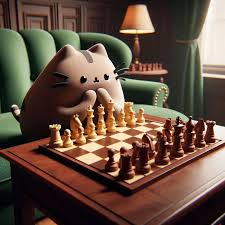

Plan de Entrenamiento de Ajedrez
Vanessa Santos
| Fecha | Apertura | Estrategia | Táctica | Finales | Otros |
|---|---|---|---|---|---|
| 16/06/25 | - | El alfil malo | Ejercicios 71-80 | - | - |
| 17/06/25 | - | El alfil malo | Ejercicios 81-90 | - | Ganar 1 partida de 15+10 min |
| 18/06/25 | - | El alfil malo | Ejercicios 91-100 | - | Ganar 1 partida de 15+10 min |
| 19/06/25 | - | La pareja de alfiles | Ejercicios 1-50 | - | Ganar 1 partida de 15+10 min |
| 20/06/25 | - | La pareja de alfiles | Ejercicios 51-100 | - | Ganar 1 partida de 15+10 min |
| 21/06/25 | — | ||||
Recomendaciones y reglas
- ¡Las partidas de tarea son independientes de las que se juegan en clase!
- Jugar partidas con tiempo mayor a 15 minutos.
- Utilizar CT-ART como software para realizar los ejercicios de táctica.
- Apegarse al repertorio fijado en el entrenamiento.
- Entrenar variante de apertura contra Fritz/Stockfish.